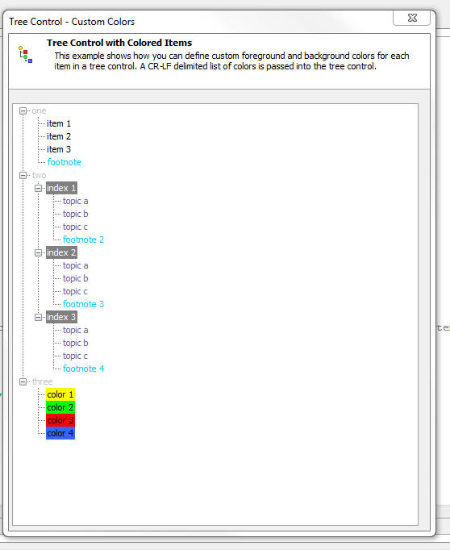

Xdialog - Tree Control - Custom Colors for Tree Items
You can now define custom colors for items in an Xdialog tree control.
Below is the Xdialog code that generates this tree.
Notice:
- Treecolors is a cr-lf delimited list of colors.
- Each entry in the list is a foreground color followed optionally by a comma and a background color
- Items in the tree use the {S=<number>} directive to pick an entry in the list of passed in colors.
- For example, {S=3} will select the colors in the 3rd line of the passed in list.
- Notice that you can also specify just the background color (see ,Yellow in the treecolors list below for example)
- The C=@treecolors directive in the Xdialog passes in the list of colors. @treecolors indicates that the colors are contained in a variable called treecolors.
dim treecolors as c = <<%str%
Gray
White,Dark Gray
Blue Gray
Sky Blue
,Yellow
,Green
,Red
,Light Blue
%str%
dim tree as c
dim item as c
tree = <<%str%
{S=1}one.item 1
{S=1}one.item 2
{S=1}one.item 3
{S=1}one.{S=4}footnote
{S=1}two.{S=2}index 1.{S=3}topic a
{S=1}two.{S=2}index 1.{S=3}topic b
{S=1}two.{S=2}index 1.{S=3}topic c
{S=1}two.{S=2}index 1.{S=4}footnote 2
{S=1}two.{S=2}index 2.{S=3}topic a
{S=1}two.{S=2}index 2.{S=3}topic b
{S=1}two.{S=2}index 2.{S=3}topic c
{S=1}two.{S=2}index 2.{S=4}footnote 3
{S=1}two.{S=2}index 3.{S=3}topic a
{S=1}two.{S=2}index 3.{S=3}topic b
{S=1}two.{S=2}index 3.{S=3}topic c
{S=1}two.{S=2}index 3.{S=4}footnote 4
{S=1}three.{S=5}color 1
{S=1}three.{S=6}color 2
{S=1}three.{S=7}color 3
{S=1}three.{S=8}color 4
%str%
tree = remove_blank_lines(tree)
item = word(tree,1,crlf())
dim pHeading as p
pHeading.BodyText = "This example shows how you can define custom foreground and background colors for each item in a tree control. A CR-LF delimited list of colors is passed into the tree control."
pHeading.HeadingText = "Tree Control with Colored Items"
pHeading.Image = "$$large.code.aScript"
ui_dlg_box("Tree Control - Custom Colors",<<%dlg%
{XdialogTitleSection=100,5pHeading};
{lf};
[%S=BLRX;C=@treecolors%.100,40item^<tree]
%dlg%)